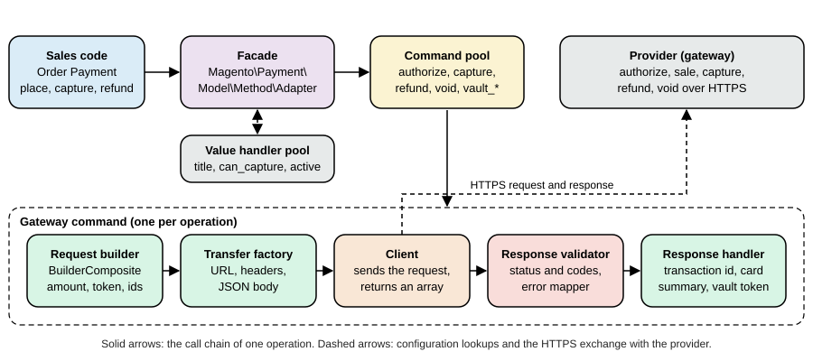

Checkout and Payments
|
This content was generated with the assistance of AI and should be verified against the official documentation before being relied on in production. |
This page was written against Magento Open Source and Adobe Commerce 2.4.9 (generally available on 2026-05-12) and checked on 2026-10-27, and everything that runs was run on Mage-OS 3.6.0, which is built on the Magento 2.4.9 base (PHP 8.5.12, developer mode, MariaDB 11.8, OpenSearch 3, Valkey 9). The checkout, the quote and payment APIs, the payment provider gateway and the Vault exist in all editions. Adobe Payment Services is available for Adobe Commerce as a Cloud Service (ACCS), for Adobe Commerce on cloud infrastructure and on premises and for Magento Open Source. The out-of-process checkout starter kit and its payment module are Adobe Commerce only: the installation page of the payment module states that Magento Open Source is not supported. The page follows the pages on REST and GraphQL APIs and API Authentication, uses the module vocabulary of Module Anatomy and Dependency Injection (the payment framework is almost entirely configured with virtual types), and links to Out-of-Process Extensibility for the webhooks that the payment starter kit uses.
Checkout is where a Magento shop either earns money or loses it, and it is also the part of Magento with the most moving parts: a JavaScript application (Knockout components in the Luma theme), a quote that is rewritten at every step, totals collectors, shipping carriers, payment methods that each bring their own JavaScript renderer, PHP command pools that talk to a provider, a vault of stored cards, and two security regimes (PCI DSS for card data, Content Security Policy for scripts). The page goes through them in the order a shopper meets them, and builds one payment method on the way.
The running example is the Pocket Coffee shop on its European website: Spanish and English store views in euro, a flat shipping rate of 4.90 EUR for Spain, and a card payment method called Pocket Coffee Pay. There is no real payment provider behind it. No payment account may be created for documentation, so the "provider" is a forty-line Node.js stub that approves, declines, captures, refunds and voids; the Magento module that talks to it is real code and is shown in full. The module codes and test data (the test customer, the stub’s token strings) are local values and carry no meaning outside the test shop.
The checkout as the shopper sees it
Out of the box the Luma checkout has two steps. In Shipping the shopper gives the e-mail address (guests), the shipping address and picks a shipping method from the carriers that returned a rate. In Review & Payments the shopper picks a payment method, can enter a discount code, reviews the order summary and the billing address (shown on the payment method or on the payment page, depending on configuration), accepts the terms and conditions if they are enabled and places the order. Customers who are signed in start with their default address; customers who belong to a B2B company that uses purchase orders get a different second step (see Catalog, Multistore and B2B).
Source: Adobe Commerce: Checkout process
The behaviour is configured under Stores > Settings > Configuration > Sales > Checkout. The defaults of the module
(Magento_Checkout config.xml in 2.4.9) are in the right-hand column.
| Admin field | Path | Meaning | Default |
|---|---|---|---|
Enable Guest Checkout Login |
|
Lets an unauthenticated visitor ask whether an e-mail address already has an account, to offer a sign-in prompt. The page warns that it exposes that information |
0 |
Enable Onepage Checkout |
|
One-page checkout is the default format |
1 |
Allow Guest Checkout |
|
Guests can buy without an account (store view scope, applies to the storefront and the APIs) |
1 |
Enable Terms and Conditions |
|
Requires the shopper to agree to the terms (the |
off |
Display Billing Address On |
|
0 shows the billing address on the payment method, 1 on the payment page |
0 |
Maximum Number of Items to Display in Order Summary |
|
Items listed in the summary before it collapses |
10 |
Quote Lifetime (days) |
|
Age after which an inactive quote is deleted (website scope) |
30 |
After Adding a Product Redirect to Cart |
|
Shows the cart page after an add to cart |
0 |
What the page is made of
The checkout page is a layout (checkout_index_index.xml of Magento_Checkout) with one block, checkout.root, whose
argument jsLayout is a tree of UI components: checkout contains steps (shipping-step and billing-step, the second
containing payment with payments-list and the renders that every payment module extends), a sidebar with the summary and
the authentication popup. Modules add to the tree by merging their own checkout_index_index.xml; that is how the payment
renderer of the module below is registered. The values that the components need arrive in the global object
window.checkoutConfig, which Magento\Checkout\Model\CompositeConfigProvider builds from every class registered in its
configProviders argument; each provider implements ConfigProviderInterface::getConfig() and returns an array that is merged
into the object (the shopper’s quote, the totals, the payment method settings, the stored cards). The quote itself is held by
the JavaScript model Magento_Checkout/js/model/quote, and a payment method is displayed by a renderer: a UI component that
extends Magento_Checkout/js/view/payment/default, registered in Magento_Checkout/js/model/payment/renderer-list, with an
HTML template. The renderer methods that a custom method overrides are getCode(), getData() (the payload sent to the server;
it must follow Magento\Quote\Api\Data\PaymentInterface), placeOrder(), selectPaymentMethod(), isChecked(),
isRadioButtonVisible(), getTitle(), validate() (called by placeOrder()), getBillingAddressFormName() and
disposeSubscriptions().
The Luma checkout is a Knockout application (no deprecation notice for it was found on the check date; see Frontend: Luma Themes). Hyvä Checkout replaces it with Alpine.js and is commercial; Commerce Storefront on Edge Delivery Services has its own checkout drop-in that talks to GraphQL. The server-side contracts below are the same for all three, which is the reason to learn them first.
The checkout as an API
Everything the Luma checkout does is available as REST and GraphQL calls on the quote (also called the cart), and a headless storefront, a mobile app and a test script use exactly those. The sequence for a guest is:
Source: Adobe Commerce docs: REST API
The same flow was run against the Spanish store view (pc_es) of the Pocket Coffee EU website with this script. The store view
code is part of the URL of a REST call (/rest/pc_es/V1/..., or /rest/V1/... for the default view) and a header
(Store: pc_es) on GraphQL calls. The address needs a region_id for Spain (Madrid is region 161): without it the call
fails with Please check the shipping address information. "regionId" is required. Enter and try again., because Spain has
regions in the directory data and the country is configured to require them.
#!/usr/bin/env bash
# Guest checkout over REST, store view code in $STORE (default: "default"), payment token in $PAY_TOKEN.
set -euo pipefail
BASE=${BASE:-http://localhost:8082}
STORE=${STORE:-default}
SKU=${SKU:-POCKET-001}
QTY=${QTY:-2}
PAY_METHOD=${PAY_METHOD:-pocketcoffee_pay}
PAY_TOKEN=${PAY_TOKEN:-tok_ok_1}
R="$BASE/rest/$STORE/V1"
J='Content-Type: application/json'
CART=$(curl -s -X POST "$R/guest-carts" | tr -d '"')
echo "cart: $CART"
curl -s -X POST "$R/guest-carts/$CART/items" -H "$J" \
-d "{\"cartItem\":{\"sku\":\"$SKU\",\"qty\":$QTY,\"quote_id\":\"$CART\"}}" | jq -c '{item_id,sku,qty,price}'
ADDR='{"firstname":"Grace","lastname":"Hopper","email":"grace@example.test","street":["Calle de Alcala 1"],"city":"Madrid","region":"Madrid","region_id":161,"postcode":"28014","country_id":"ES","telephone":"600000000"}'
echo "shipping methods:"
curl -s -X POST "$R/guest-carts/$CART/estimate-shipping-methods" -H "$J" \
-d "{\"address\":$ADDR}" | jq -c '.[] | {carrier_code,method_code,amount}'
echo "shipping-information:"
curl -s -X POST "$R/guest-carts/$CART/shipping-information" -H "$J" \
-d "{\"addressInformation\":{\"shipping_address\":$ADDR,\"billing_address\":$ADDR,\"shipping_carrier_code\":\"flatrate\",\"shipping_method_code\":\"flatrate\"}}" \
| jq -c '{payment_methods:[.payment_methods[].code], totals:.totals|{subtotal,shipping_amount,grand_total}}'
echo "payment-information (place order):"
curl -s -X POST "$R/guest-carts/$CART/payment-information" -H "$J" \
-d "{\"email\":\"grace@example.test\",\"paymentMethod\":{\"method\":\"$PAY_METHOD\",\"additional_data\":{\"provider_token\":\"$PAY_TOKEN\"}},\"billing_address\":$ADDR}"
echoIts output for two bags of the 250 g Ethiopia beans and the Spanish flat rate was:
cart: uAJAXBdj2unkfnA4FL1kCzi93vuWAkYI
{"item_id":19,"sku":"PCMS-ETH-WHL-250","qty":2,"price":9.9}
shipping methods:
{"carrier_code":"flatrate","method_code":"flatrate","amount":4.9}
shipping-information:
{"payment_methods":["checkmo","pocketcoffee_pay","pocketcoffee_pay_vault"],"totals":{"subtotal":19.8,"shipping_amount":4.9,"grand_total":24.7}}
payment-information (place order):
"8"The payment_methods list is what the payment step shows; it comes back with the totals of shipping-information and can also be
read at any time with GET guest-carts/{id}/payment-methods. The order id (8) is the entity id; the number the shopper sees is
the increment id, here 2000000001. Each store view has its own sequence tables (sequence_order_2 for store view 2) and
a profile whose prefix is the store view id (2 for pc_es and pc_en, which share a store, 3 and 4 for the other
websites), so an order number says in which store view the order was placed, and the numbering of one store view is independent
of the others. For a signed-in
customer the same calls use carts/mine and a customer token, as in the Vault section below.
The GraphQL version has one mutation per step and returns the same data in shapes that suit a storefront. The payment mutation carries the one-time token under the key of the method, which the module defines in its schema (see below):
mutation { createEmptyCart }
mutation($cart: String!) {
addProductsToCart(cartId: $cart, cartItems: [
{ sku: "PCMS-COL-ESP-1KG", quantity: 1 }, { sku: "PCMS-ETH-WHL-250", quantity: 2 }]) {
cart { total_quantity prices { grand_total { value currency } } } user_errors { code message } } }
mutation($cart: String!) {
setGuestEmailOnCart(input: { cart_id: $cart, email: "grace@example.test" }) { cart { email } }
setShippingAddressesOnCart(input: { cart_id: $cart, shipping_addresses: [{ address: {
firstname: "Grace", lastname: "Hopper", street: ["Calle de Alcala 1"], city: "Madrid",
region: "Madrid", region_id: 161, postcode: "28014", country_code: "ES", telephone: "600000000" } }] }) {
cart { shipping_addresses { available_shipping_methods { carrier_code method_code amount { value currency } } } } }
setBillingAddressOnCart(input: { cart_id: $cart, billing_address: { same_as_shipping: true } }) { cart { billing_address { city } } }
}
mutation($cart: String!) {
setShippingMethodsOnCart(input: { cart_id: $cart, shipping_methods: [{ carrier_code: "flatrate", method_code: "flatrate" }] }) {
cart { prices { grand_total { value currency } } available_payment_methods { code title } } } }
mutation($cart: String!, $token: String!) {
setPaymentMethodOnCart(input: { cart_id: $cart, payment_method: {
code: "pocketcoffee_pay", pocketcoffee_pay: { provider_token: $token } } }) {
cart { selected_payment_method { code title } } } }
mutation($cart: String!) {
placeOrder(input: { cart_id: $cart }) {
errors { code message }
orderV2 { number status total { grand_total { value currency } } payment_methods { name type } } } }Run with the header Store: pc_es, the last mutation answered:
{"placeOrder": {"errors": null, "orderV2": {"number": "2000000002", "status": "Procesando",
"total": {"grand_total": {"value": 54.6, "currency": "EUR"}},
"payment_methods": [{"name": "Pay by card (Pocket Coffee Pay)", "type": "pocketcoffee_pay"}]}}}The status is the label of the order status in the language of the store view (Procesando, the Spanish locale package
translating Processing), which matters to anything that parses it. In the same cart, available_payment_methods listed
checkmo, pocketcoffee_pay and pocketcoffee_pay_vault, and the cart total of 54.60 EUR was 49.70 of goods and 4.90 of
shipping: one 1 kg bag at 29.90, two 250 g bags at 9.90.
Two details of GraphQL that cost time. setPaymentMethodOnCart accepts only the fields of PaymentMethodInput that the
installed modules extend; core defines inputs for PayPal and Payflow only (introspection on Mage-OS 3.6.0 lists
payflowpro, payflowpro_cc_vault, paypal_express and a few more), so a custom method has to extend the schema and register
an additional data provider (the module does, in etc/schema.graphqls and etc/graphql/di.xml). And with the Adobe
out-of-process payment module installed the input gains a generic additional_data array of key and value pairs; that
extension is an Adobe Commerce module and is not in Mage-OS.
Shipping and the order total in the example
Shipping carriers and totals collectors are not the subject of this page, but the totals above need configuring, and the
configuration is a good example of scopes. The Pocket Coffee EU website offers one flat rate of 4.90 EUR per order, only to
Spain, and Pocket Coffee Pay with the vault. Each value is set on the website scope of pocketcoffee_eu, so that no other
website is affected:
bin/magento config:set --scope=websites --scope-code=pocketcoffee_eu carriers/flatrate/type O # O = per order, I = per item
bin/magento config:set --scope=websites --scope-code=pocketcoffee_eu carriers/flatrate/price 4.90
bin/magento config:set --scope=websites --scope-code=pocketcoffee_eu carriers/flatrate/sallowspecific 1
bin/magento config:set --scope=websites --scope-code=pocketcoffee_eu carriers/flatrate/specificcountry ES
bin/magento config:set --scope=websites --scope-code=pocketcoffee_eu payment/pocketcoffee_pay/vault_active 1Source: Adobe Commerce: Shipping methods
On the default website the same cart cost 10.00 for shipping before the change, because the shipped flat rate is 5.00 per item
(carriers/flatrate/type is I by default) and the cart had two items. The "free shipping above 40 EUR" rule of the shop is not
a carrier setting: the Free Shipping carrier (carriers/freeshipping/free_shipping_subtotal) appears next to the flat rate when the subtotal
reaches the threshold, and a cart price rule with the action "Free Shipping" is the way to make the flat rate itself free; the
shop-level rules belong to Admin and Store Setup.
The totals are produced by total collectors, classes that run in a configured order (subtotal, discount, shipping, tax, grand
total) and are declared in etc/sales.xml of the modules; the order can be inspected in Stores > Settings > Configuration >
Sales > Sales > Checkout Totals Sort Order. The totals of the quote are recomputed by every API call that changes it, which is
why the totals returned by shipping-information already include the shipping.
How a payment method is defined
A payment method is a PHP object that implements Magento\Payment\Model\MethodInterface, identified by a code
(checkmo, pocketcoffee_pay). Which object comes from the configuration key payment/<code>/model. In the past every
method extended Magento\Payment\Model\Method\AbstractMethod and implemented authorize, capture and refund in methods of
its own class; the offline methods of core (checkmo, banktransfer, cashondelivery, purchaseorder) still do. Online
methods are built with the payment provider gateway, in which the object is the generic Magento\Payment\Model\Method\Adapter
(the facade) configured, with virtual types, with the pieces that talk to the provider. The configuration of a method is
spread over four places.
| File | Role |
|---|---|
|
The defaults under |
|
Registers the method in the payment configuration; the sample sets |
|
The fields of the Admin page Stores > Configuration > Sales > Payment Methods, each with a |
|
The facade, its config object, value handlers, validators, command pool and commands, as virtual types |
The key payment_action decides what happens when the order is placed: authorize reserves the amount and the order becomes
Processing with the money authorized but not collected (the merchant captures by creating an invoice), authorize_capture
authorizes and captures in one step and creates the invoice. The default order_status of an authorized order is set per
method.
When a method does not appear
The most common support question is "my payment method is missing". The list is built by
Magento\Payment\Model\MethodList::getAvailableMethods(), which takes every method whose active is true for the quote’s
store and requires, for each, that isAvailable($quote) is true and that all of these checks pass: use in checkout
(can_use_checkout), country (the billing country is allowed when allowspecific is 1), currency (the quote currency is
accepted), order total between min_order_total and max_order_total, and the zero total rule. The gateway facade also dispatches the event
payment_method_is_active after its own check, which is the hook where third-party code can still remove a method. In
practice the list is empty because of one of these: the method is active on the default scope but not on the website (the
fields have a scope), the currency of the website is not in the method’s list, the country is not allowed, a total limit is not
met, or a Vault method has no active provider. bin/magento config:show --scope=websites --scope-code=<code> payment/<method>/active
and the payment methods the API returns for the quote answer most of it.
The payment provider gateway
The parts and what each one is for
The payment provider gateway is a set of small interfaces that together turn "authorize 24.70 EUR for this order" into one HTTP exchange with a provider and the bookkeeping that follows. Adobe’s documentation uses the Braintree module of 2.3 as its example; that module was removed in 2.4.0, and the documentation states that the concepts are still valid for 2.4.x while the code samples are not supported. The module of this page is written from the concepts and runs on 2.4.9.

| Part | Core class or interface | Responsibility |
|---|---|---|
Facade |
|
The |
Value handler pool and config |
|
Answers |
Validator pool |
|
The availability checks, for example the allowed-country list |
Command pool |
|
A map from a command name ( |
Gateway command |
|
Runs a fixed sequence: build the request, create the transfer, send it, validate the response, handle the response. Errors from the validator become a |
Request builder |
|
Returns an array for the request from the |
Transfer factory |
|
Creates the transport object: URI, method, headers, body, client config |
Client |
|
Sends the request and returns an array. The module’s client uses |
Response validator |
|
Decides whether the response is a success. Returns a result with failure descriptions and error codes |
Response handler |
|
Writes the outcome to the order payment: transaction id, card summary, vault token, additional information |
Subject reader |
|
Reads |
Source: Adobe Commerce docs: Commerce payment provider gateway; Adobe Commerce docs: Gateway command
The five operations the documentation lists are authorize (funds are held, not withdrawn), sale (authorize and capture),
capture (withdraw an authorized amount), refund (return withdrawn funds) and void (cancel the transfer). The facade
calls a command by the name of the method that the sales code invoked: placing an order with the payment action authorize calls
authorize; creating an invoice with online capture calls capture; placing an order with authorize_capture also calls
capture, because the order payment captures through the same facade method, and that is the catch: the facade has no sale
step of its own. A method that supports both payment actions therefore registers, under the name capture, a capture
strategy command that decides, as Magento’s former Braintree module did: if the payment has an authorization transaction it
runs settlement (the real capture of that authorization), otherwise it runs sale. An online credit memo calls refund;
cancelling an order calls cancel and voiding calls void. The commands vault_authorize and vault_sale are called by the
Vault facade for a stored card.
The module, file by file
The module PocketCoffee_Pay is shown in full. The layout:
app/code/PocketCoffee/Pay/
registration.php composer.json
etc/module.xml config.xml payment.xml di.xml events.xml csp_whitelist.xml
pocketcoffee_pay_error_mapping.xml schema.graphqls
etc/adminhtml/system.xml
etc/frontend/di.xml
etc/graphql/di.xml
Gateway/Helper/SubjectReader.php
Gateway/Command/CaptureStrategyCommand.php
Gateway/Request/PaymentDataBuilder.php TokenDataBuilder.php VaultDataBuilder.php TransactionDataBuilder.php
Gateway/Http/TransferFactory.php Gateway/Http/Client/GatewayClient.php
Gateway/Validator/ResponseValidator.php
Gateway/Response/TransactionIdHandler.php CardDetailsHandler.php VaultDetailsHandler.php
Model/Config/Source/PaymentAction.php Model/GraphQl/AdditionalDataProvider.php
Model/Ui/ConfigProvider.php Model/Ui/TokenUiComponentProvider.php
Observer/DataAssignObserver.php
view/frontend/layout/checkout_index_index.xml
view/frontend/web/js/view/payment/pocketcoffee-pay.js
view/frontend/web/js/view/payment/method-renderer/pocketcoffee-pay.js vault.js
view/frontend/web/template/payment/pocketcoffee-pay.htmlDefaults and registration. config.xml holds the defaults. The method starts inactive (active 0); the website that wants it
turns it on. The model is not a class but the name of the virtual type declared in di.xml.
<?xml version="1.0"?>
<config xmlns:xsi="http://www.w3.org/2001/XMLSchema-instance" xsi:noNamespaceSchemaLocation="urn:magento:module:Magento_Store:etc/config.xsd">
<default>
<payment>
<pocketcoffee_pay>
<active>0</active>
<title>Pay by card (Pocket Coffee Pay)</title>
<model>PocketCoffeePayFacade</model>
<payment_action>authorize</payment_action>
<api_url>http://host.docker.internal:9099</api_url>
<currency>EUR</currency>
<can_authorize>1</can_authorize>
<can_capture>1</can_capture>
<can_capture_partial>1</can_capture_partial>
<can_refund>1</can_refund>
<can_void>1</can_void>
<can_cancel>1</can_cancel>
<can_use_checkout>1</can_use_checkout>
<can_use_internal>0</can_use_internal>
<is_gateway>1</is_gateway>
<order_status>processing</order_status>
<allowspecific>0</allowspecific>
<sort_order>10</sort_order>
</pocketcoffee_pay>
<pocketcoffee_pay_vault>
<active>0</active>
<model>PocketCoffeePayVaultFacade</model>
<title>Saved cards (Pocket Coffee Pay)</title>
<sort_order>11</sort_order>
</pocketcoffee_pay_vault>
</payment>
</default>
</config><?xml version="1.0"?>
<payment xmlns:xsi="http://www.w3.org/2001/XMLSchema-instance" xsi:noNamespaceSchemaLocation="urn:magento:module:Magento_Payment:etc/payment.xsd">
<methods>
<method name="pocketcoffee_pay">
<allow_multiple_address>1</allow_multiple_address>
</method>
</methods>
</payment>The Admin form needs one field per setting, including the vault switch, and the API key is stored encrypted.
(bin/magento config:set accepts only paths that config.xml or system.xml declare; a made-up path answers
The "payment/pocketcoffee_pay_vault/zzz" path doesn't exist.)
<?xml version="1.0"?>
<config xmlns:xsi="http://www.w3.org/2001/XMLSchema-instance" xsi:noNamespaceSchemaLocation="urn:magento:module:Magento_Config:etc/system_file.xsd">
<system>
<section id="payment">
<group id="pocketcoffee_pay" translate="label" type="text" sortOrder="35" showInDefault="1" showInWebsite="1" showInStore="0">
<label>Pocket Coffee Pay</label>
<field id="active" translate="label" type="select" sortOrder="10" showInDefault="1" showInWebsite="1" canRestore="1">
<label>Enabled</label>
<source_model>Magento\Config\Model\Config\Source\Yesno</source_model>
<config_path>payment/pocketcoffee_pay/active</config_path>
</field>
<field id="title" translate="label" type="text" sortOrder="20" showInDefault="1" showInWebsite="1" showInStore="1" canRestore="1">
<label>Title</label>
<config_path>payment/pocketcoffee_pay/title</config_path>
</field>
<field id="api_url" translate="label" type="text" sortOrder="30" showInDefault="1" showInWebsite="1">
<label>Gateway URL</label>
<config_path>payment/pocketcoffee_pay/api_url</config_path>
</field>
<field id="api_key" translate="label" type="obscure" sortOrder="40" showInDefault="1" showInWebsite="1">
<label>API key</label>
<backend_model>Magento\Config\Model\Config\Backend\Encrypted</backend_model>
<config_path>payment/pocketcoffee_pay/api_key</config_path>
</field>
<field id="payment_action" translate="label" type="select" sortOrder="50" showInDefault="1" showInWebsite="1">
<label>Payment action</label>
<source_model>PocketCoffee\Pay\Model\Config\Source\PaymentAction</source_model>
<config_path>payment/pocketcoffee_pay/payment_action</config_path>
</field>
<field id="vault_active" translate="label" type="select" sortOrder="55" showInDefault="1" showInWebsite="1" canRestore="1">
<label>Allow saving cards (Vault)</label>
<source_model>Magento\Config\Model\Config\Source\Yesno</source_model>
<config_path>payment/pocketcoffee_pay_vault/active</config_path>
</field>
<field id="allowspecific" translate="label" type="allowspecific" sortOrder="60" showInDefault="1" showInWebsite="1">
<label>Payment from applicable countries</label>
<source_model>Magento\Payment\Model\Config\Source\Allspecificcountries</source_model>
<config_path>payment/pocketcoffee_pay/allowspecific</config_path>
</field>
<field id="specificcountry" translate="label" type="multiselect" sortOrder="70" showInDefault="1" showInWebsite="1">
<label>Payment from specific countries</label>
<source_model>Magento\Directory\Model\Config\Source\Country</source_model>
<config_path>payment/pocketcoffee_pay/specificcountry</config_path>
</field>
</group>
</section>
</system>
</config>The wiring. All of the gateway is configured in one di.xml, almost entirely with virtual types. Read it from the top:
the facade, its configuration object, the value handler pool, the validators, the command pool, the three request builder
composites, one transfer factory per operation (they differ only in the path), the response handler chains, the error mapper
and the commands; the last block is the Vault facade (explained below).
<?xml version="1.0"?>
<config xmlns:xsi="http://www.w3.org/2001/XMLSchema-instance" xsi:noNamespaceSchemaLocation="urn:magento:framework:ObjectManager/etc/config.xsd">
<!-- Facade: the payment method object the core talks to -->
<virtualType name="PocketCoffeePayFacade" type="Magento\Payment\Model\Method\Adapter">
<arguments>
<argument name="code" xsi:type="const">PocketCoffee\Pay\Model\Ui\ConfigProvider::CODE</argument>
<argument name="formBlockType" xsi:type="string">Magento\Payment\Block\Form</argument>
<argument name="infoBlockType" xsi:type="string">Magento\Payment\Block\Info</argument>
<argument name="valueHandlerPool" xsi:type="object">PocketCoffeePayValueHandlerPool</argument>
<argument name="validatorPool" xsi:type="object">PocketCoffeePayValidatorPool</argument>
<argument name="commandPool" xsi:type="object">PocketCoffeePayCommandPool</argument>
</arguments>
</virtualType>
<!-- Configuration: reads payment/pocketcoffee_pay/* -->
<virtualType name="PocketCoffeePayConfig" type="Magento\Payment\Gateway\Config\Config">
<arguments>
<argument name="methodCode" xsi:type="const">PocketCoffee\Pay\Model\Ui\ConfigProvider::CODE</argument>
</arguments>
</virtualType>
<virtualType name="PocketCoffeePayConfigValueHandler" type="Magento\Payment\Gateway\Config\ConfigValueHandler">
<arguments>
<argument name="configInterface" xsi:type="object">PocketCoffeePayConfig</argument>
</arguments>
</virtualType>
<virtualType name="PocketCoffeePayValueHandlerPool" type="Magento\Payment\Gateway\Config\ValueHandlerPool">
<arguments>
<argument name="handlers" xsi:type="array">
<item name="default" xsi:type="string">PocketCoffeePayConfigValueHandler</item>
</argument>
</arguments>
</virtualType>
<!-- Validators: country (configured allowspecific list) and the gateway response -->
<virtualType name="PocketCoffeePayCountryValidator" type="Magento\Payment\Gateway\Validator\CountryValidator">
<arguments>
<argument name="config" xsi:type="object">PocketCoffeePayConfig</argument>
</arguments>
</virtualType>
<virtualType name="PocketCoffeePayValidatorPool" type="Magento\Payment\Gateway\Validator\ValidatorPool">
<arguments>
<argument name="validators" xsi:type="array">
<item name="country" xsi:type="string">PocketCoffeePayCountryValidator</item>
</argument>
</arguments>
</virtualType>
<!-- Command pool: one command per operation -->
<virtualType name="PocketCoffeePayCommandPool" type="Magento\Payment\Gateway\Command\CommandPool">
<arguments>
<argument name="commands" xsi:type="array">
<item name="authorize" xsi:type="string">PocketCoffeePayAuthorizeCommand</item>
<item name="sale" xsi:type="string">PocketCoffeePaySaleCommand</item>
<item name="capture" xsi:type="string">PocketCoffeePayCaptureStrategyCommand</item>
<item name="settlement" xsi:type="string">PocketCoffeePayCaptureCommand</item>
<item name="refund" xsi:type="string">PocketCoffeePayRefundCommand</item>
<item name="void" xsi:type="string">PocketCoffeePayVoidCommand</item>
<item name="cancel" xsi:type="string">PocketCoffeePayVoidCommand</item>
<item name="vault_authorize" xsi:type="string">PocketCoffeePayVaultAuthorizeCommand</item>
<item name="vault_sale" xsi:type="string">PocketCoffeePayVaultSaleCommand</item>
</argument>
</arguments>
</virtualType>
<!-- Request builders -->
<virtualType name="PocketCoffeePayAuthorizeRequest" type="Magento\Payment\Gateway\Request\BuilderComposite">
<arguments>
<argument name="builders" xsi:type="array">
<item name="payment" xsi:type="string">PocketCoffee\Pay\Gateway\Request\PaymentDataBuilder</item>
<item name="token" xsi:type="string">PocketCoffee\Pay\Gateway\Request\TokenDataBuilder</item>
</argument>
</arguments>
</virtualType>
<virtualType name="PocketCoffeePayVaultAuthorizeRequest" type="Magento\Payment\Gateway\Request\BuilderComposite">
<arguments>
<argument name="builders" xsi:type="array">
<item name="payment" xsi:type="string">PocketCoffee\Pay\Gateway\Request\PaymentDataBuilder</item>
<item name="vault" xsi:type="string">PocketCoffee\Pay\Gateway\Request\VaultDataBuilder</item>
</argument>
</arguments>
</virtualType>
<virtualType name="PocketCoffeePayFollowUpRequest" type="Magento\Payment\Gateway\Request\BuilderComposite">
<arguments>
<argument name="builders" xsi:type="array">
<item name="payment" xsi:type="string">PocketCoffee\Pay\Gateway\Request\PaymentDataBuilder</item>
<item name="transaction" xsi:type="string">PocketCoffee\Pay\Gateway\Request\TransactionDataBuilder</item>
</argument>
</arguments>
</virtualType>
<!-- Transfer factories: the path is the only difference between operations -->
<virtualType name="PocketCoffeePayAuthorizeTransfer" type="PocketCoffee\Pay\Gateway\Http\TransferFactory">
<arguments><argument name="path" xsi:type="string">/v1/authorize</argument></arguments>
</virtualType>
<virtualType name="PocketCoffeePaySaleTransfer" type="PocketCoffee\Pay\Gateway\Http\TransferFactory">
<arguments><argument name="path" xsi:type="string">/v1/sale</argument></arguments>
</virtualType>
<virtualType name="PocketCoffeePayCaptureTransfer" type="PocketCoffee\Pay\Gateway\Http\TransferFactory">
<arguments><argument name="path" xsi:type="string">/v1/capture</argument></arguments>
</virtualType>
<virtualType name="PocketCoffeePayRefundTransfer" type="PocketCoffee\Pay\Gateway\Http\TransferFactory">
<arguments><argument name="path" xsi:type="string">/v1/refund</argument></arguments>
</virtualType>
<virtualType name="PocketCoffeePayVoidTransfer" type="PocketCoffee\Pay\Gateway\Http\TransferFactory">
<arguments><argument name="path" xsi:type="string">/v1/void</argument></arguments>
</virtualType>
<!-- Response handlers -->
<virtualType name="PocketCoffeePayAuthorizeHandler" type="Magento\Payment\Gateway\Response\HandlerChain">
<arguments>
<argument name="handlers" xsi:type="array">
<item name="transaction" xsi:type="string">PocketCoffee\Pay\Gateway\Response\TransactionIdHandler</item>
<item name="card" xsi:type="string">PocketCoffee\Pay\Gateway\Response\CardDetailsHandler</item>
<item name="vault" xsi:type="string">PocketCoffee\Pay\Gateway\Response\VaultDetailsHandler</item>
</argument>
</arguments>
</virtualType>
<virtualType name="PocketCoffeePayFollowUpHandler" type="Magento\Payment\Gateway\Response\HandlerChain">
<arguments>
<argument name="handlers" xsi:type="array">
<item name="transaction" xsi:type="string">PocketCoffee\Pay\Gateway\Response\TransactionIdHandler</item>
</argument>
</arguments>
</virtualType>
<!-- Error mapping: gateway error codes to messages the shopper may see -->
<virtualType name="PocketCoffeePayErrorConfigReader" type="Magento\Payment\Gateway\ErrorMapper\VirtualConfigReader">
<arguments>
<argument name="fileName" xsi:type="string">pocketcoffee_pay_error_mapping.xml</argument>
</arguments>
</virtualType>
<virtualType name="PocketCoffeePayErrorMappingData" type="Magento\Payment\Gateway\ErrorMapper\MappingData">
<arguments>
<argument name="reader" xsi:type="object">PocketCoffeePayErrorConfigReader</argument>
<argument name="cacheId" xsi:type="string">pocketcoffee_pay_error_mapper</argument>
</arguments>
</virtualType>
<virtualType name="PocketCoffeePayErrorMessageMapper" type="Magento\Payment\Gateway\ErrorMapper\ErrorMessageMapper">
<arguments>
<argument name="messageMapping" xsi:type="object">PocketCoffeePayErrorMappingData</argument>
</arguments>
</virtualType>
<!-- Commands -->
<virtualType name="PocketCoffeePayAuthorizeCommand" type="Magento\Payment\Gateway\Command\GatewayCommand">
<arguments>
<argument name="requestBuilder" xsi:type="object">PocketCoffeePayAuthorizeRequest</argument>
<argument name="transferFactory" xsi:type="object">PocketCoffeePayAuthorizeTransfer</argument>
<argument name="client" xsi:type="object">PocketCoffee\Pay\Gateway\Http\Client\GatewayClient</argument>
<argument name="handler" xsi:type="object">PocketCoffeePayAuthorizeHandler</argument>
<argument name="validator" xsi:type="object">PocketCoffee\Pay\Gateway\Validator\ResponseValidator</argument>
<argument name="errorMessageMapper" xsi:type="object">PocketCoffeePayErrorMessageMapper</argument>
</arguments>
</virtualType>
<virtualType name="PocketCoffeePaySaleCommand" type="Magento\Payment\Gateway\Command\GatewayCommand">
<arguments>
<argument name="requestBuilder" xsi:type="object">PocketCoffeePayAuthorizeRequest</argument>
<argument name="transferFactory" xsi:type="object">PocketCoffeePaySaleTransfer</argument>
<argument name="client" xsi:type="object">PocketCoffee\Pay\Gateway\Http\Client\GatewayClient</argument>
<argument name="handler" xsi:type="object">PocketCoffeePayAuthorizeHandler</argument>
<argument name="validator" xsi:type="object">PocketCoffee\Pay\Gateway\Validator\ResponseValidator</argument>
<argument name="errorMessageMapper" xsi:type="object">PocketCoffeePayErrorMessageMapper</argument>
</arguments>
</virtualType>
<virtualType name="PocketCoffeePayVaultAuthorizeCommand" type="Magento\Payment\Gateway\Command\GatewayCommand">
<arguments>
<argument name="requestBuilder" xsi:type="object">PocketCoffeePayVaultAuthorizeRequest</argument>
<argument name="transferFactory" xsi:type="object">PocketCoffeePayAuthorizeTransfer</argument>
<argument name="client" xsi:type="object">PocketCoffee\Pay\Gateway\Http\Client\GatewayClient</argument>
<argument name="handler" xsi:type="object">PocketCoffeePayFollowUpHandler</argument>
<argument name="validator" xsi:type="object">PocketCoffee\Pay\Gateway\Validator\ResponseValidator</argument>
<argument name="errorMessageMapper" xsi:type="object">PocketCoffeePayErrorMessageMapper</argument>
</arguments>
</virtualType>
<virtualType name="PocketCoffeePayVaultSaleCommand" type="Magento\Payment\Gateway\Command\GatewayCommand">
<arguments>
<argument name="requestBuilder" xsi:type="object">PocketCoffeePayVaultAuthorizeRequest</argument>
<argument name="transferFactory" xsi:type="object">PocketCoffeePaySaleTransfer</argument>
<argument name="client" xsi:type="object">PocketCoffee\Pay\Gateway\Http\Client\GatewayClient</argument>
<argument name="handler" xsi:type="object">PocketCoffeePayFollowUpHandler</argument>
<argument name="validator" xsi:type="object">PocketCoffee\Pay\Gateway\Validator\ResponseValidator</argument>
<argument name="errorMessageMapper" xsi:type="object">PocketCoffeePayErrorMessageMapper</argument>
</arguments>
</virtualType>
<virtualType name="PocketCoffeePayCaptureStrategyCommand" type="PocketCoffee\Pay\Gateway\Command\CaptureStrategyCommand">
<arguments>
<argument name="commandPool" xsi:type="object">PocketCoffeePayCommandPool</argument>
</arguments>
</virtualType>
<virtualType name="PocketCoffeePayCaptureCommand" type="Magento\Payment\Gateway\Command\GatewayCommand">
<arguments>
<argument name="requestBuilder" xsi:type="object">PocketCoffeePayFollowUpRequest</argument>
<argument name="transferFactory" xsi:type="object">PocketCoffeePayCaptureTransfer</argument>
<argument name="client" xsi:type="object">PocketCoffee\Pay\Gateway\Http\Client\GatewayClient</argument>
<argument name="handler" xsi:type="object">PocketCoffeePayFollowUpHandler</argument>
<argument name="validator" xsi:type="object">PocketCoffee\Pay\Gateway\Validator\ResponseValidator</argument>
<argument name="errorMessageMapper" xsi:type="object">PocketCoffeePayErrorMessageMapper</argument>
</arguments>
</virtualType>
<virtualType name="PocketCoffeePayRefundCommand" type="Magento\Payment\Gateway\Command\GatewayCommand">
<arguments>
<argument name="requestBuilder" xsi:type="object">PocketCoffeePayFollowUpRequest</argument>
<argument name="transferFactory" xsi:type="object">PocketCoffeePayRefundTransfer</argument>
<argument name="client" xsi:type="object">PocketCoffee\Pay\Gateway\Http\Client\GatewayClient</argument>
<argument name="handler" xsi:type="object">PocketCoffeePayFollowUpHandler</argument>
<argument name="validator" xsi:type="object">PocketCoffee\Pay\Gateway\Validator\ResponseValidator</argument>
<argument name="errorMessageMapper" xsi:type="object">PocketCoffeePayErrorMessageMapper</argument>
</arguments>
</virtualType>
<virtualType name="PocketCoffeePayVoidCommand" type="Magento\Payment\Gateway\Command\GatewayCommand">
<arguments>
<argument name="requestBuilder" xsi:type="object">PocketCoffeePayFollowUpRequest</argument>
<argument name="transferFactory" xsi:type="object">PocketCoffeePayVoidTransfer</argument>
<argument name="client" xsi:type="object">PocketCoffee\Pay\Gateway\Http\Client\GatewayClient</argument>
<argument name="handler" xsi:type="object">PocketCoffeePayFollowUpHandler</argument>
<argument name="validator" xsi:type="object">PocketCoffee\Pay\Gateway\Validator\ResponseValidator</argument>
<argument name="errorMessageMapper" xsi:type="object">PocketCoffeePayErrorMessageMapper</argument>
</arguments>
</virtualType>
<!-- Vault: stored cards -->
<virtualType name="PocketCoffeePayVaultConfig" type="Magento\Payment\Gateway\Config\Config">
<arguments>
<argument name="methodCode" xsi:type="const">PocketCoffee\Pay\Model\Ui\ConfigProvider::VAULT_CODE</argument>
</arguments>
</virtualType>
<virtualType name="PocketCoffeePayVaultValueHandler" type="Magento\Payment\Gateway\Config\ConfigValueHandler">
<arguments>
<argument name="configInterface" xsi:type="object">PocketCoffeePayVaultConfig</argument>
</arguments>
</virtualType>
<virtualType name="PocketCoffeePayVaultValueHandlerPool" type="Magento\Payment\Gateway\Config\ValueHandlerPool">
<arguments>
<argument name="handlers" xsi:type="array">
<item name="default" xsi:type="string">PocketCoffeePayVaultValueHandler</item>
</argument>
</arguments>
</virtualType>
<virtualType name="PocketCoffeePayVaultFacade" type="Magento\Vault\Model\Method\Vault">
<arguments>
<argument name="config" xsi:type="object">PocketCoffeePayVaultConfig</argument>
<argument name="valueHandlerPool" xsi:type="object">PocketCoffeePayVaultValueHandlerPool</argument>
<argument name="vaultProvider" xsi:type="object">PocketCoffeePayFacade</argument>
<argument name="code" xsi:type="const">PocketCoffee\Pay\Model\Ui\ConfigProvider::VAULT_CODE</argument>
</arguments>
</virtualType>
<virtualType name="PocketCoffeePayCommandManager" type="Magento\Payment\Gateway\Command\CommandManager">
<arguments>
<argument name="commandPool" xsi:type="object">PocketCoffeePayCommandPool</argument>
</arguments>
</virtualType>
<type name="Magento\Payment\Gateway\Command\CommandManagerPool">
<arguments>
<argument name="executors" xsi:type="array">
<item name="pocketcoffee_pay" xsi:type="string">PocketCoffeePayCommandManager</item>
</argument>
</arguments>
</type>
<!-- Plumbing the PHP classes of this module need -->
<type name="PocketCoffee\Pay\Gateway\Http\TransferFactory">
<arguments>
<argument name="config" xsi:type="object">PocketCoffeePayConfig</argument>
</arguments>
</type>
</config>The Magento2 coding standard passes on the module with 0 errors and warnings only for the length of the XML header lines, and
every XML file validates against its XSD on Mage-OS 3.6.0 (module.xml, di.xml, payment.xml, csp_whitelist.xml,
system.xml, config.xml, events.xml, the layout and the error mapping). On Adobe’s 2.4.9, the list of backward
incompatible changes names payment.xsd, error_mapping.xsd, csp_whitelist.xsd, system.xsd and many more among the XSD
files removed in 2.4.9; Mage-OS 3.6.0 still ships them, so on an Adobe installation the schema references of these files
are an IDE matter that the documentation does not resolve.
The capture strategy. The pool maps capture to this command and settlement to the gateway command that posts to the
/v1/capture endpoint:
<?php
declare(strict_types=1);
namespace PocketCoffee\Pay\Gateway\Command;
use Magento\Payment\Gateway\Command\CommandPoolInterface;
use Magento\Payment\Gateway\CommandInterface;
use PocketCoffee\Pay\Gateway\Helper\SubjectReader;
/**
* The facade always asks for "capture". This command decides what that means for the payment at hand:
* settle an earlier authorization (the merchant invoices an authorized order) or sell in one step
* (payment action "authorize and capture", where no authorization exists yet).
*/
class CaptureStrategyCommand implements CommandInterface
{
public function __construct(
private readonly CommandPoolInterface $commandPool,
private readonly SubjectReader $subjectReader
) {
}
/**
* @inheritdoc
*/
public function execute(array $commandSubject)
{
$payment = $this->subjectReader->readPayment($commandSubject)->getPayment();
$command = $payment->getAuthorizationTransaction() ? 'settlement' : 'sale';
return $this->commandPool->get($command)->execute($commandSubject);
}
}The request. Three builders and a composite. The amount is rounded to two decimals, because float noise in a payment request is a classic cause of declines; the token is read from the payment’s additional information, where the observer put it; a capture, refund or void refers to the earlier transaction.
<?php
declare(strict_types=1);
namespace PocketCoffee\Pay\Gateway\Request;
use Magento\Payment\Gateway\Request\BuilderInterface;
use PocketCoffee\Pay\Gateway\Helper\SubjectReader;
/**
* Amount, currency and the order reference every request carries.
*/
class PaymentDataBuilder implements BuilderInterface
{
public function __construct(private readonly SubjectReader $subjectReader)
{
}
/**
* @inheritdoc
*/
public function build(array $buildSubject): array
{
$payment = $this->subjectReader->readPayment($buildSubject);
$order = $payment->getOrder();
return [
'amount' => round($this->subjectReader->readAmount($buildSubject), 2),
'currency' => $order->getCurrencyCode(),
'order_ref' => $order->getOrderIncrementId(),
];
}
}<?php
declare(strict_types=1);
namespace PocketCoffee\Pay\Gateway\Request;
use Magento\Payment\Gateway\Request\BuilderInterface;
use PocketCoffee\Pay\Gateway\Helper\SubjectReader;
use PocketCoffee\Pay\Observer\DataAssignObserver;
/**
* The one-time token that stands for the card the shopper typed into the gateway's own fields.
*/
class TokenDataBuilder implements BuilderInterface
{
public function __construct(private readonly SubjectReader $subjectReader)
{
}
/**
* @inheritdoc
*/
public function build(array $buildSubject): array
{
$payment = $this->subjectReader->readPayment($buildSubject)->getPayment();
return ['token' => (string) $payment->getAdditionalInformation(DataAssignObserver::PROVIDER_TOKEN)];
}
}<?php
declare(strict_types=1);
namespace PocketCoffee\Pay\Gateway\Request;
use Magento\Payment\Gateway\Request\BuilderInterface;
use PocketCoffee\Pay\Gateway\Helper\SubjectReader;
/**
* Capture, refund and void act on an earlier transaction of the same payment.
*/
class TransactionDataBuilder implements BuilderInterface
{
public function __construct(private readonly SubjectReader $subjectReader)
{
}
/**
* @inheritdoc
*/
public function build(array $buildSubject): array
{
$payment = $this->subjectReader->readPayment($buildSubject)->getPayment();
// Capture and void refer to the authorization; a refund refers to the capture that was invoiced.
$parentId = $payment->getParentTransactionId() ?: $payment->getLastTransId();
return ['transaction_id' => preg_replace('/-(cap|ref|void)$/', '', (string) $parentId)];
}
}Transfer and client. The transfer factory is one class used by five virtual types. The API key is stored encrypted and the
payment Config object returns the stored value as it is: using it as a bearer token without decrypting it produced a
bad key answer from the provider in the first run. The client never logs the request, which carries the token.
<?php
declare(strict_types=1);
namespace PocketCoffee\Pay\Gateway\Http;
use Magento\Framework\Encryption\EncryptorInterface;
use Magento\Framework\Serialize\Serializer\Json;
use Magento\Payment\Gateway\ConfigInterface;
use Magento\Payment\Gateway\Http\TransferBuilder;
use Magento\Payment\Gateway\Http\TransferFactoryInterface;
use Magento\Payment\Gateway\Http\TransferInterface;
/**
* Turns the array built by the request builders into an HTTP request for the gateway.
* One virtual type per operation sets $path (see etc/di.xml).
*/
class TransferFactory implements TransferFactoryInterface
{
public function __construct(
private readonly TransferBuilder $transferBuilder,
private readonly ConfigInterface $config,
private readonly Json $json,
private readonly EncryptorInterface $encryptor,
private readonly string $path = '/v1/authorize'
) {
}
/**
* @inheritdoc
*/
public function create(array $request): TransferInterface
{
return $this->transferBuilder
->setMethod('POST')
->setUri(rtrim((string) $this->config->getValue('api_url'), '/') . $this->path)
->setHeaders([
'Content-Type' => 'application/json',
'Authorization' => 'Bearer ' . $this->encryptor->decrypt((string) $this->config->getValue('api_key')),
])
->setBody($this->json->serialize($request))
->build();
}
}<?php
declare(strict_types=1);
namespace PocketCoffee\Pay\Gateway\Http\Client;
use Magento\Framework\HTTP\Client\Curl;
use Magento\Framework\Serialize\Serializer\Json;
use Magento\Payment\Gateway\Http\ClientException;
use Magento\Payment\Gateway\Http\ClientInterface;
use Magento\Payment\Gateway\Http\TransferInterface;
use Psr\Log\LoggerInterface;
/**
* Sends the request and returns the decoded JSON body. The card data never passes through here:
* only the one-time token does.
*/
class GatewayClient implements ClientInterface
{
public function __construct(
private readonly Curl $curl,
private readonly Json $json,
private readonly LoggerInterface $logger
) {
}
/**
* @inheritdoc
*/
public function placeRequest(TransferInterface $transferObject): array
{
$this->curl->setTimeout(10);
foreach ($transferObject->getHeaders() as $name => $value) {
$this->curl->addHeader($name, $value);
}
try {
$this->curl->post($transferObject->getUri(), $transferObject->getBody());
$body = $this->curl->getBody();
$response = $body === '' ? [] : $this->json->unserialize($body);
} catch (\Throwable $e) {
$this->logger->critical('PocketCoffee Pay request failed: ' . $e->getMessage());
throw new ClientException(__('The payment service is not reachable. Please try again later.'));
}
// Never log the request (it carries the token); log the outcome only.
$this->logger->info('PocketCoffee Pay', [
'uri' => $transferObject->getUri(),
'http_status' => $this->curl->getStatus(),
'response_status' => $response['status'] ?? null,
]);
return is_array($response) ? $response + ['http_status' => $this->curl->getStatus()] : [];
}
}Validation and error mapping. The validator turns a provider answer into a result with failure texts and error codes. The
command logs each and throws a CommandException whose message is the mapped one when the error mapper knows the code (the
message code in pocketcoffee_pay_error_mapping.xml), or the generic Transaction has been declined. Please try again
later. otherwise. Mapping is what lets the shopper read "Your card was declined. Please use another card." while the log keeps
the provider’s code.
<?php
declare(strict_types=1);
namespace PocketCoffee\Pay\Gateway\Validator;
use Magento\Payment\Gateway\Validator\AbstractValidator;
use Magento\Payment\Gateway\Validator\ResultInterface;
use PocketCoffee\Pay\Gateway\Helper\SubjectReader;
/**
* A response is valid only if the gateway reports one of the accepted statuses.
*/
class ResponseValidator extends AbstractValidator
{
private const OK = ['authorized', 'captured', 'refunded', 'voided'];
public function __construct(
\Magento\Payment\Gateway\Validator\ResultInterfaceFactory $resultFactory,
private readonly SubjectReader $subjectReader
) {
parent::__construct($resultFactory);
}
/**
* @inheritdoc
*/
public function validate(array $validationSubject): ResultInterface
{
$response = $this->subjectReader->readResponse($validationSubject);
if (in_array($response['status'] ?? '', self::OK, true)) {
return $this->createResult(true);
}
return $this->createResult(
false,
[(string) ($response['message'] ?? __('Transaction has been declined.'))],
[(string) ($response['code'] ?? 'declined')]
);
}
}<?xml version="1.0"?>
<mapping xmlns:xsi="http://www.w3.org/2001/XMLSchema-instance" xsi:noNamespaceSchemaLocation="urn:magento:module:Magento_Payment:etc/error_mapping.xsd">
<message_list>
<message code="card_declined" translate="true">Your card was declined. Please use another card.</message>
<message code="bad key" translate="true">The payment service is not configured correctly.</message>
</message_list>
</mapping>Handling the response. The transaction id handler stores the provider’s transaction id; whether the transaction is closed decides whether a later capture can refer to it (an authorization stays open until it is captured). The card handler keeps only the brand and the last four digits, the sort of data that may be stored.
<?php
declare(strict_types=1);
namespace PocketCoffee\Pay\Gateway\Response;
use Magento\Payment\Gateway\Response\HandlerInterface;
use Magento\Sales\Model\Order\Payment;
use PocketCoffee\Pay\Gateway\Helper\SubjectReader;
/**
* Stores the gateway transaction id so that later capture, refund and void commands can refer to it.
*/
class TransactionIdHandler implements HandlerInterface
{
public function __construct(private readonly SubjectReader $subjectReader)
{
}
/**
* @inheritdoc
*/
public function handle(array $handlingSubject, array $response): void
{
/** @var Payment $payment */
$payment = $this->subjectReader->readPayment($handlingSubject)->getPayment();
$payment->setTransactionId((string) $response['id']);
// An authorization stays open until it is captured; a sale or a follow-up operation is final.
$payment->setIsTransactionClosed(($response['status'] ?? '') !== 'authorized');
$payment->setTransactionAdditionalInfo('gateway_status', (string) ($response['status'] ?? ''));
}
}<?php
declare(strict_types=1);
namespace PocketCoffee\Pay\Gateway\Response;
use Magento\Payment\Gateway\Response\HandlerInterface;
use PocketCoffee\Pay\Gateway\Helper\SubjectReader;
/**
* Keeps the non-sensitive card summary on the order payment (brand and last four digits).
*/
class CardDetailsHandler implements HandlerInterface
{
public function __construct(private readonly SubjectReader $subjectReader)
{
}
/**
* @inheritdoc
*/
public function handle(array $handlingSubject, array $response): void
{
$payment = $this->subjectReader->readPayment($handlingSubject)->getPayment();
$card = $response['card'] ?? [];
$payment->setCcType((string) ($card['brand'] ?? ''));
$payment->setCcLast4((string) ($card['last4'] ?? ''));
$payment->setCcExpMonth((string) ($card['exp_month'] ?? ''));
$payment->setCcExpYear((string) ($card['exp_year'] ?? ''));
}
}From the browser to the request. The renderer sends the token as additional_data.provider_token. The facade dispatches
payment_method_assign_data_pocketcoffee_pay when it assigns data to the payment, and an observer copies the token to the
payment’s additional information, from where the builder reads it. Only whitelisted keys should be copied.
<?php
declare(strict_types=1);
namespace PocketCoffee\Pay\Observer;
use Magento\Framework\Event\Observer;
use Magento\Payment\Observer\AbstractDataAssignObserver;
use Magento\Quote\Api\Data\PaymentInterface;
/**
* Copies the one-time token produced by the gateway JavaScript from additional_data
* into the payment's additional_information, where the request builders read it.
*/
class DataAssignObserver extends AbstractDataAssignObserver
{
public const PROVIDER_TOKEN = 'provider_token';
/**
* @inheritdoc
*/
public function execute(Observer $observer): void
{
$data = $this->readDataArgument($observer);
$additionalData = $data->getData(PaymentInterface::KEY_ADDITIONAL_DATA);
if (!is_array($additionalData) || !isset($additionalData[self::PROVIDER_TOKEN])) {
return;
}
$this->readPaymentModelArgument($observer)->setAdditionalInformation(
self::PROVIDER_TOKEN,
(string) $additionalData[self::PROVIDER_TOKEN]
);
}
}The provider used in the example
The "provider" is this stub. It checks a bearer key, approves unless the token is tok_declined or the amount exceeds 1000,
and keeps transactions in memory so that capture, refund and void can find them. The key is read from the environment
(GATEWAY_API_KEY) and must equal the value saved in the Admin field; the token strings are test values.
// Minimal stand-in for a card gateway used to exercise the Pocket Coffee payment module.
// Run: GATEWAY_API_KEY=<any test value> node pcff-gateway-stub.js (listens on 0.0.0.0:9099)
// Put the same value in the Admin field API key (or config:set payment/pocketcoffee_pay/api_key).
'use strict';
const http = require('node:http');
const crypto = require('node:crypto');
const transactions = new Map();
const API_KEY = process.env.GATEWAY_API_KEY;
if (!API_KEY) {
console.error('Set GATEWAY_API_KEY to any test value');
process.exit(1);
}
function reply(res, status, body) {
res.writeHead(status, { 'Content-Type': 'application/json' });
res.end(JSON.stringify(body));
}
function handle(path, body) {
const id = 'txn_' + crypto.randomBytes(5).toString('hex');
if (path === '/v1/authorize' || path === '/v1/sale') {
const token = String(body.token || '');
const amount = Number(body.amount);
if (token === 'tok_declined' || amount > 1000) {
return [402, { status: 'declined', code: 'card_declined', message: 'The card was declined.' }];
}
const t = {
id,
status: path === '/v1/sale' ? 'captured' : 'authorized',
amount,
currency: body.currency,
order_ref: body.order_ref,
card: { brand: 'visa', last4: '4242', exp_month: '12', exp_year: '2030' },
payment_method_id: 'pm_' + crypto.createHash('sha1').update(token + (body.order_ref || '')).digest('hex').slice(0, 10)
};
transactions.set(id, t);
return [200, t];
}
const parent = transactions.get(String(body.transaction_id || ''));
if (!parent) return [404, { status: 'error', message: 'unknown transaction' }];
if (path === '/v1/capture') { parent.status = 'captured'; return [200, { ...parent, id: parent.id + '-cap', parent_id: parent.id }]; }
if (path === '/v1/refund') { parent.status = 'refunded'; return [200, { id: parent.id + '-ref', parent_id: parent.id, status: 'refunded', amount: body.amount }]; }
if (path === '/v1/void') { parent.status = 'voided'; return [200, { id: parent.id + '-void', parent_id: parent.id, status: 'voided' }]; }
return [404, { status: 'error', message: 'unknown path' }];
}
http.createServer((req, res) => {
let raw = '';
req.on('data', (c) => (raw += c));
req.on('end', () => {
if (req.headers.authorization !== `Bearer ${API_KEY}`) return reply(res, 401, { status: 'error', message: 'bad key' });
let body = {};
try { body = raw ? JSON.parse(raw) : {}; } catch (e) { return reply(res, 400, { status: 'error', message: 'bad json' }); }
const [status, out] = handle(req.url, body);
console.log(new Date().toISOString(), req.method, req.url, status, JSON.stringify(out));
reply(res, status, out);
});
}).listen(9099, '0.0.0.0', () => console.log('pcff gateway stub on 9099'));What it did when it ran
With the module enabled, the API key set (bin/magento config:set payment/pocketcoffee_pay/api_key <test key>, stored as
0:3:..., that is encrypted) and the stub running, the REST checkout of the previous section with PAY_METHOD=pocketcoffee_pay
and a token produced the order and, in the stub’s log, the exchange:
POST /v1/authorize 200 {"id":"txn_69b94d0c9b","status":"authorized","amount":17,"currency":"USD","order_ref":"000000002","card":{"brand":"visa","last4":"4242",...}}
POST /v1/capture 200 {"id":"txn_69b94d0c9b-cap","status":"captured","amount":17,...}
POST /v1/refund 200 {"id":"txn_36911f3e11-ref","parent_id":"txn_36911f3e11","status":"refunded","amount":17}
POST /v1/authorize 402 {"status":"declined","code":"card_declined","message":"The card was declined."}The order read back from the API after the authorization was state: processing, status: processing, with
payment.method: pocketcoffee_pay, cc_type: visa, cc_last4: 4242, last_trans_id: txn_69b94d0c9b and
amount_authorized: 17. The table sales_payment_transaction had an authorization row (closed once captured) and a capture
row whose parent_txn_id is the authorization. The decline surfaced to the shopper as Your card was declined. Please use
another card. (and as the generic text before the error mapping was added).
The two payment actions were both exercised on the Pocket Coffee EU website. With authorize the order is authorized and the
invoice made later captures it (the log shows /v1/authorize and then /v1/capture for the same order, which is the
strategy choosing settlement). With authorize_capture placing the order alone sent /v1/sale, created the invoice
and left the order processing with amount_paid equal to the total (the transaction table holds a capture row with no
parent, because there was no authorization). The invoice with online capture, through the API:
curl -s -X POST "$BASE/rest/V1/order/$ORDER_ID/invoice" -H "Authorization: Bearer $ADMIN_TOKEN" \
-H 'Content-Type: application/json' -d '{"capture":true,"notify":false}'An online refund is the step that did not work through the API on Mage-OS 3.6.0: POST /V1/invoice/{id}/refund with
isOnline true, and the service contract Magento\Sales\Api\RefundInvoiceInterface called from PHP, both stopped with
QuantityValidator::isValidDecimalRefundQty(): Argument #2 ($itemQty) must be of type float, string given (the quantity
arrives from the invoice item as the string 2.0000), and POST /V1/order/{id}/refund created an offline credit memo
(the order closed, no call reached the provider). What worked is what the Admin does: a credit memo built by
CreditmemoFactory::createByInvoice() and refunded online through
CreditmemoManagementInterface::refund($creditmemo, false), which executed the module’s refund command (the third line of the log above, an order that ended closed). If you
need online refunds through an API on this build, call that pair from PHP, or refund from the Admin. This was observed on one
build; the same page of Adobe documents none of it, and it may not reproduce on Adobe Commerce 2.4.9.
$creditmemo = $objectManager->get(\Magento\Sales\Model\Order\CreditmemoFactory::class)
->createByInvoice($invoice, ['qtys' => [$orderItemId => 2.0], 'shipping_amount' => 10]);
$result = $objectManager->get(\Magento\Sales\Api\CreditmemoManagementInterface::class)->refund($creditmemo, false);The storefront side of the method
The server only needs the code to reach the facade, but the shopper sees none of it until a renderer exists. The module adds
four things: a config provider (the data in window.checkoutConfig), a layout fragment, a renderer registration and a renderer
with its template. The config provider needs its config argument configured in etc/frontend/di.xml, because the constructor
asks for an interface; the first load of the checkout failed with Cannot instantiate interface
Magento\Payment\Gateway\ConfigInterface until that was added.
<?php
declare(strict_types=1);
namespace PocketCoffee\Pay\Model\Ui;
use Magento\Checkout\Model\ConfigProviderInterface;
use Magento\Payment\Gateway\ConfigInterface;
/**
* Data handed to the checkout JavaScript as window.checkoutConfig.payment.pocketcoffee_pay
*/
class ConfigProvider implements ConfigProviderInterface
{
public const CODE = 'pocketcoffee_pay';
public const VAULT_CODE = 'pocketcoffee_pay_vault';
/**
* @param ConfigInterface $config the PocketCoffeePayConfig virtual type
*/
public function __construct(private readonly ConfigInterface $config)
{
}
/**
* @inheritdoc
*/
public function getConfig(): array
{
return [
'payment' => [
self::CODE => [
'isActive' => (bool) $this->config->getValue('active'),
'ccVaultCode' => self::VAULT_CODE,
'sdkUrl' => 'https://js.pay.example.com/v1/pay.js',
],
],
];
}
}<?xml version="1.0"?>
<config xmlns:xsi="http://www.w3.org/2001/XMLSchema-instance" xsi:noNamespaceSchemaLocation="urn:magento:framework:ObjectManager/etc/config.xsd">
<type name="Magento\Checkout\Model\CompositeConfigProvider">
<arguments>
<argument name="configProviders" xsi:type="array">
<item name="pocketcoffee_pay_config_provider" xsi:type="object">PocketCoffee\Pay\Model\Ui\ConfigProvider</item>
</argument>
</arguments>
</type>
<type name="PocketCoffee\Pay\Model\Ui\ConfigProvider">
<arguments>
<argument name="config" xsi:type="object">PocketCoffeePayConfig</argument>
</arguments>
</type>
<type name="Magento\Vault\Model\Ui\TokensConfigProvider">
<arguments>
<argument name="tokenUiComponentProviders" xsi:type="array">
<item name="pocketcoffee_pay" xsi:type="object">PocketCoffee\Pay\Model\Ui\TokenUiComponentProvider</item>
</argument>
</arguments>
</type>
</config><?xml version="1.0"?>
<page xmlns:xsi="http://www.w3.org/2001/XMLSchema-instance" xsi:noNamespaceSchemaLocation="urn:magento:framework:View/Layout/etc/page_configuration.xsd">
<body>
<referenceBlock name="checkout.root">
<arguments>
<argument name="jsLayout" xsi:type="array">
<item name="components" xsi:type="array">
<item name="checkout" xsi:type="array">
<item name="children" xsi:type="array">
<item name="steps" xsi:type="array">
<item name="children" xsi:type="array">
<item name="billing-step" xsi:type="array">
<item name="children" xsi:type="array">
<item name="payment" xsi:type="array">
<item name="children" xsi:type="array">
<item name="renders" xsi:type="array">
<item name="children" xsi:type="array">
<item name="pocketcoffee-pay-payments" xsi:type="array">
<item name="component" xsi:type="string">PocketCoffee_Pay/js/view/payment/pocketcoffee-pay</item>
<item name="methods" xsi:type="array">
<item name="pocketcoffee_pay" xsi:type="array">
<item name="isBillingAddressRequired" xsi:type="boolean">true</item>
</item>
</item>
</item>
</item>
</item>
</item>
</item>
</item>
</item>
</item>
</item>
</item>
</item>
</item>
</argument>
</arguments>
</referenceBlock>
</body>
</page>define([
'uiComponent',
'Magento_Checkout/js/model/payment/renderer-list'
], function (Component, rendererList) {
'use strict';
// One renderer for the card form. Stored cards are not registered here: the Vault module creates one
// renderer per token from window.checkoutConfig.payment.vault (see Model/Ui/TokenUiComponentProvider.php).
rendererList.push({
type: 'pocketcoffee_pay',
component: 'PocketCoffee_Pay/js/view/payment/method-renderer/pocketcoffee-pay'
});
return Component.extend({});
});define([
'jquery',
'Magento_Checkout/js/view/payment/default',
'Magento_Vault/js/view/payment/vault-enabler'
], function ($, Component, VaultEnabler) {
'use strict';
return Component.extend({
defaults: {
template: 'PocketCoffee_Pay/payment/pocketcoffee-pay',
providerToken: ''
},
initialize: function () {
this._super();
this.vaultEnabler = new VaultEnabler();
this.vaultEnabler.setPaymentCode(this.getVaultCode());
return this;
},
getCode: function () {
return 'pocketcoffee_pay';
},
getVaultCode: function () {
return window.checkoutConfig.payment[this.getCode()].ccVaultCode;
},
isVaultEnabled: function () {
return this.vaultEnabler.isVaultEnabled();
},
/**
* Called by the gateway's script with the one-time token of the card typed in its hosted fields.
* The real card number never reaches this page's own inputs.
*/
onTokenReceived: function (token) {
this.providerToken = token;
},
validate: function () {
return this.providerToken !== '';
},
getData: function () {
var data = {
method: this.getCode(),
additional_data: {
provider_token: this.providerToken
}
};
this.vaultEnabler.visitAdditionalData(data);
return data;
}
});
});<div class="payment-method" data-bind="css: {'_active': (getCode() == isChecked())}">
<div class="payment-method-title field choice">
<input type="radio"
name="payment[method]"
class="radio"
data-bind="attr: {'id': getCode()}, value: getCode(), checked: isChecked, click: selectPaymentMethod, visible: isRadioButtonVisible()"/>
<label data-bind="attr: {'for': getCode()}" class="label"><span data-bind="text: getTitle()"></span></label>
</div>
<div class="payment-method-content">
<!-- ko foreach: getRegion('messages') -->
<!-- ko template: getTemplate() --><!-- /ko -->
<!--/ko-->
<div class="payment-method-billing-address">
<!-- ko foreach: $parent.getRegion(getBillingAddressFormName()) -->
<!-- ko template: getTemplate() --><!-- /ko -->
<!--/ko-->
</div>
<!-- The gateway script mounts its hosted card fields here and calls onTokenReceived -->
<div id="pocketcoffee-pay-fields" class="pocketcoffee-pay-fields"></div>
<div class="field choice" data-bind="visible: isVaultEnabled()">
<input type="checkbox"
name="vault[is_enabled]"
class="checkbox"
data-bind="attr: {'id': getCode() + '_enable_vault'}, checked: vaultEnabler.isActivePaymentTokenEnabler"/>
<label class="label" data-bind="attr: {'for': getCode() + '_enable_vault'}">
<span><!-- ko i18n: 'Save this card for later use'--><!-- /ko --></span>
</label>
</div>
<div class="checkout-agreements-block">
<!-- ko foreach: $parent.getRegion('before-place-order') -->
<!-- ko template: getTemplate() --><!-- /ko -->
<!--/ko-->
</div>
<div class="actions-toolbar">
<div class="primary">
<button class="action primary checkout"
type="submit"
data-bind="click: placeOrder, attr: {title: $t('Place Order')}, enable: (getCode() == isChecked())"
disabled>
<span data-bind="i18n: 'Place Order'"></span>
</button>
</div>
</div>
</div>
</div>Three design points. The card number never touches the shop: the provider’s script mounts its own hosted fields in the
pocketcoffee-pay-fields element and hands the page a one-time token (onTokenReceived), so the shop’s pages and servers
stay out of the cardholder data and the PCI DSS scope stays at the lightest self-assessment questionnaire that the provider
supports. The renderer extends Magento_Checkout/js/view/payment/default, not the credit card form of Magento_Payment, for the
same reason (the card form has inputs for a number and an expiry). And validate() makes placeOrder() refuse while there is
no token.
The page was loaded in headless Chrome (Playwright with the system Chrome) against the Spanish store view, with a product in
the cart, the form filled in and the shipping step completed. The payment step listed Check / Money order and Pay by card (Pocket Coffee Pay)
(the vault is not a method of its own: see below), window.checkoutConfig.payment.pocketcoffee_pay held
{"isActive":true,"ccVaultCode":"pocketcoffee_pay_vault","sdkUrl":"https://js.pay.example.com/v1/pay.js"} and the "Save this card
for later use" checkbox existed. The gateway script itself is not loaded (the host is a reserved example domain), so no token was
produced in the browser and the order was not placed from the page; the order path was exercised with REST and GraphQL.
<?xml version="1.0"?>
<csp_whitelist xmlns:xsi="http://www.w3.org/2001/XMLSchema-instance" xsi:noNamespaceSchemaLocation="urn:magento:module:Magento_Csp:etc/csp_whitelist.xsd">
<policies>
<policy id="script-src">
<values>
<value id="pocketcoffee_pay_js" type="host">js.pay.example.com</value>
</values>
</policy>
<policy id="connect-src">
<values>
<value id="pocketcoffee_pay_api" type="host">api.pay.example.com</value>
</values>
</policy>
<policy id="frame-src">
<values>
<value id="pocketcoffee_pay_3ds" type="host">3ds.pay.example.com</value>
</values>
</policy>
</policies>
</csp_whitelist>The whitelist above matters in production. Since Magento 2.4.7 the Content Security Policy is enforced (restrict mode) on
the payment pages of the storefront and the Admin and is report-only elsewhere; a payment script from a host that no module
whitelisted is blocked by the browser, and the symptom is a payment form that never appears. The module declares the hosts
for script-src, connect-src and frame-src (the 3-D Secure frame). The same file for each provider is a normal part of
a payment module.
Stored cards: the Vault
How it works
The Vault lets a signed-in customer pay with a card saved earlier. It adds a second payment method to the facade: a vault
facade (Magento\Vault\Model\Method\Vault as a virtual type) whose vaultProvider is the main facade. The pieces are:
-
a payment token (
Magento\Vault\Api\Data\PaymentTokenInterface, tablevault_payment_token) withcustomer_id,payment_method_code, apublic_hashthat the browser uses (never the gateway token), thegateway_tokenthe provider uses, thetype(cardoraccount),details(a JSON string shown to the customer: masked number, expiry, brand),expires_atand the flagsis_activeandis_visible; -
a response handler in the main authorize command that creates the token when the shopper ticked "save" (the flag travels as the additional data
is_active_payment_token_enabler, whichMagento\Vault\Observer\VaultEnableAssignerstores on the payment); the Vault’sAfterPaymentSaveObserverpersists it when the order payment is saved; -
the two vault commands
vault_authorizeandvault_salein the command pool, and an entry in the command manager pool keyed by the provider’s code, because the Vault method looks the commands up through the provider; -
a token UI component provider, which tells the checkout how to display a stored card.
<?php
declare(strict_types=1);
namespace PocketCoffee\Pay\Gateway\Response;
use Magento\Framework\Serialize\Serializer\Json;
use Magento\Payment\Gateway\Response\HandlerInterface;
use Magento\Sales\Api\Data\OrderPaymentExtensionInterfaceFactory;
use Magento\Vault\Api\Data\PaymentTokenFactoryInterface;
use Magento\Vault\Api\Data\PaymentTokenInterface;
use Magento\Vault\Model\Ui\VaultConfigProvider;
use PocketCoffee\Pay\Gateway\Helper\SubjectReader;
/**
* When the shopper ticked "save this card", attaches a vault token to the order payment.
* The Vault module's AfterPaymentSaveObserver persists it once the payment is saved.
*/
class VaultDetailsHandler implements HandlerInterface
{
public function __construct(
private readonly SubjectReader $subjectReader,
private readonly PaymentTokenFactoryInterface $tokenFactory,
private readonly OrderPaymentExtensionInterfaceFactory $extensionFactory,
private readonly Json $json
) {
}
/**
* @inheritdoc
*/
public function handle(array $handlingSubject, array $response): void
{
$payment = $this->subjectReader->readPayment($handlingSubject)->getPayment();
if (!$payment->getAdditionalInformation(VaultConfigProvider::IS_ACTIVE_CODE)) {
return;
}
$card = $response['card'] ?? [];
/** @var PaymentTokenInterface $token */
$token = $this->tokenFactory->create(PaymentTokenFactoryInterface::TOKEN_TYPE_CREDIT_CARD);
$token->setGatewayToken((string) $response['payment_method_id']);
$token->setExpiresAt(sprintf('%s-%s-01 00:00:00', $card['exp_year'] ?? '2030', $card['exp_month'] ?? '12'));
$token->setTokenDetails($this->json->serialize([
'type' => strtoupper((string) ($card['brand'] ?? '')),
'maskedCC' => (string) ($card['last4'] ?? ''),
'expirationDate' => ($card['exp_month'] ?? '') . '/' . ($card['exp_year'] ?? ''),
]));
$extension = $payment->getExtensionAttributes() ?: $this->extensionFactory->create();
$extension->setVaultPaymentToken($token);
$payment->setExtensionAttributes($extension);
}
}<?php
declare(strict_types=1);
namespace PocketCoffee\Pay\Gateway\Request;
use Magento\Framework\Exception\LocalizedException;
use Magento\Payment\Gateway\Request\BuilderInterface;
use Magento\Vault\Api\Data\PaymentTokenInterface;
use PocketCoffee\Pay\Gateway\Helper\SubjectReader;
/**
* For a stored card the "token" sent to the gateway is the stored payment method id.
*/
class VaultDataBuilder implements BuilderInterface
{
public function __construct(private readonly SubjectReader $subjectReader)
{
}
/**
* @inheritdoc
*/
public function build(array $buildSubject): array
{
$extension = $this->subjectReader->readPayment($buildSubject)->getPayment()->getExtensionAttributes();
$token = $extension?->getVaultPaymentToken();
if (!$token instanceof PaymentTokenInterface) {
throw new LocalizedException(__('The stored card could not be found.'));
}
return ['token' => $token->getGatewayToken(), 'customer_initiated' => true];
}
}<?php
declare(strict_types=1);
namespace PocketCoffee\Pay\Model\Ui;
use Magento\Framework\Serialize\Serializer\Json;
use Magento\Vault\Api\Data\PaymentTokenInterface;
use Magento\Vault\Model\Ui\TokenUiComponentInterface;
use Magento\Vault\Model\Ui\TokenUiComponentInterfaceFactory;
use Magento\Vault\Model\Ui\TokenUiComponentProviderInterface;
/**
* Describes a stored card to the checkout so that it is listed under "Stored cards".
*/
class TokenUiComponentProvider implements TokenUiComponentProviderInterface
{
public function __construct(
private readonly TokenUiComponentInterfaceFactory $componentFactory,
private readonly Json $json
) {
}
/**
* @inheritdoc
*/
public function getComponentForToken(PaymentTokenInterface $paymentToken): TokenUiComponentInterface
{
return $this->componentFactory->create([
'config' => [
'code' => ConfigProvider::VAULT_CODE,
TokenUiComponentProviderInterface::COMPONENT_DETAILS => $this->json->unserialize(
$paymentToken->getTokenDetails() ?: '{}'
),
TokenUiComponentProviderInterface::COMPONENT_PUBLIC_HASH => $paymentToken->getPublicHash(),
],
'name' => 'PocketCoffee_Pay/js/view/payment/method-renderer/vault',
]);
}
}On the storefront the Vault module renders one entry per token, from window.checkoutConfig.payment.vault, using the
component named by TokenUiComponentProvider (PocketCoffee_Pay/js/view/payment/method-renderer/vault, which extends the
Vault’s own renderer and only adds accessors for the card details). An early version of the module registered a renderer for
pocketcoffee_pay_vault itself; the checkout then showed an empty entry with a console error about the template, because the
Vault creates the renderers per token and the method code must not be registered by hand.
define([
'Magento_Vault/js/view/payment/method-renderer/vault'
], function (VaultComponent) {
'use strict';
return VaultComponent.extend({
defaults: {
template: 'Magento_Vault/payment/form'
},
getMaskedCard: function () {
return this.details.maskedCC;
},
getExpirationDate: function () {
return this.details.expirationDate;
},
getCardType: function () {
return this.details.type;
},
getToken: function () {
return this.publicHash;
}
});
});What it did when it ran
A test customer placed an order with the card form and the box ticked (additional_data carried
is_active_payment_token_enabler: true), and the table held:
entity_id customer_id payment_method_code public_hash gateway_token type details is_active is_visible
1 3 pocketcoffee_pay 45fc0f9be80d3b... pm_d64e09bf8c card {"type":"VISA","maskedCC":"4242","expirationDate":"12/2030"} 1 1The next order of the customer was placed with the vault method and only the hash:
PAY_JSON='{"method":"pocketcoffee_pay_vault","additional_data":{"public_hash":"<public_hash of the token>"}}' ./checkout-customer.sh "$CUSTOMER_TOKEN"Source: Adobe Commerce docs: Vault
and the stub received POST /v1/authorize with the stored payment_method_id (pm_d64e09bf8c) instead of a token. Three conditions
had to be right for the vault method to be available. The vault must be active for the website
(payment/pocketcoffee_pay_vault/active, set by the Allow saving cards field; it did nothing while the main method was
inactive, because Vault::isAvailable() requires its provider to be available), the customer must be signed in
(customer_id is part of the hash and the token is looked up by customer), and the token’s payment_method_code must be the
provider’s. Signed in as that customer on the default website, headless Chrome showed the stored card in the payment step, in its own group
above "Select a new payment method", as ending 4242 ( expires: 12/2030 ) (the stock Vault template shows the masked number and
the expiry; a brand icon needs a template of the module), and window.checkoutConfig.payment.vault held the token with the
component PocketCoffee_Pay/js/view/payment/method-renderer/vault and the same public hash. The test customer had been created
on the main website: customer accounts are scoped to a website by default (customer/account_share/scope), so the same
credentials were refused on the domain of the Pocket Coffee EU website, which is the reason the stored card appears on
the default website only. A guest cart showed pocketcoffee_pay_vault in its payment_methods, which a real storefront filters out because the
customer has no tokens, so do not treat the presence of the method in the API list as proof that the shopper can use it. Setting
the vault GraphQL input needs another additional data provider (the example module implements it only for the card method,
and Magento’s own PayPal module shows the pattern for payflowpro_cc_vault).
input PaymentMethodInput {
pocketcoffee_pay: PocketCoffeePayInput @doc(description: "Required input for Pocket Coffee Pay.")
}
input PocketCoffeePayInput @doc(description: "The one-time token produced by the gateway script in the browser.") {
provider_token: String! @doc(description: "One-time token that stands for the card typed in the gateway fields.")
is_active_payment_token_enabler: Boolean @doc(description: "Save the card for later use (customers only).")
}Source: Adobe Commerce docs: Vault
<?php
declare(strict_types=1);
namespace PocketCoffee\Pay\Model\GraphQl;
use Magento\Framework\GraphQl\Exception\GraphQlInputException;
use Magento\QuoteGraphQl\Model\Cart\Payment\AdditionalDataProviderInterface;
/**
* Hands the pocketcoffee_pay input of setPaymentMethodOnCart to the payment as additional_data,
* where DataAssignObserver picks it up.
*/
class AdditionalDataProvider implements AdditionalDataProviderInterface
{
/**
* @inheritdoc
*/
public function getData(array $args): array
{
$input = $args['pocketcoffee_pay'] ?? [];
if (empty($input['provider_token'])) {
throw new GraphQlInputException(__('Required parameter "provider_token" for "pocketcoffee_pay" is missing.'));
}
return $input;
}
}<?xml version="1.0"?>
<config xmlns:xsi="http://www.w3.org/2001/XMLSchema-instance" xsi:noNamespaceSchemaLocation="urn:magento:framework:ObjectManager/etc/config.xsd">
<type name="Magento\QuoteGraphQl\Model\Cart\Payment\AdditionalDataProviderPool">
<arguments>
<argument name="dataProviders" xsi:type="array">
<item name="pocketcoffee_pay" xsi:type="object">PocketCoffee\Pay\Model\GraphQl\AdditionalDataProvider</item>
</argument>
</arguments>
</type>
</config>Adobe Payment Services
Payment Services is Adobe’s hosted payment solution: payments, vaulting, reporting and fraud protection configured from the Admin, with a sandbox and a production data space. It is available for Adobe Commerce as a Cloud Service, for all supported versions of Adobe Commerce on cloud infrastructure and on premises and for Magento Open Source; it is part of Adobe Commerce from 2.4.7 and a Marketplace extension for earlier versions and for Open Source. The setup is: connect the instance to the Commerce Services Connector (System > Services > Commerce Services Connector, once), download and install the extension with Composer (Open Source customers use the on-premises instructions), onboard the merchant with the payment partner (standard and advanced options depend on the country) and configure it in Sales > Payment Services. The settings are scoped: Enable is a website setting, Payment mode (sandbox or production) and the merchant ids are store view settings, and the credit card fields have a title (store view), a payment action (website: authorize or authorize and capture), 3DS Secure authentication (always, when required, off) and Vault enabled (store view). An entitled merchant gets one production and two testing data spaces. It was not installed or run here: it needs a Marketplace download, Commerce Services and a payment partner onboarding.
Source: Adobe Commerce: Payment Services guide; Adobe Commerce: Payment Services compatibility; Adobe Commerce: Payment Services configuration
Choosing between building a method and using Payment Services is a business decision before it is a technical one. A custom gateway module is the right tool when a local provider has no extension, when the provider’s own extension is of poor quality, or when the shop needs control of the flow; Payment Services (or the provider’s maintained extension) is right when the payments need to be certified, supported and kept current against fraud and regulation changes, which is most shops.
Out-of-process payments and the checkout starter kit
On Adobe Commerce (PaaS and SaaS) a payment method can be defined without PHP, and that is how a headless storefront gets
one on ACCS, where PHP modules do not exist. The checkout starter kit’s payment-method app and the module
magento/module-out-of-process-payment-methods (installed with composer require magento/module-out-of-process-payment-methods
--with-dependencies; Adobe Commerce 2.4.5 or later, PHP 8.1 or later; Magento Open Source is not supported) add:
-
a REST resource to register the method,
POST /V1/oope_payment_method, withGET /V1/oope_payment_methodandGET /V1/oope_payment_method/:code. The body carriescode(required),active(required),title,backend_integration_url(an App Builder URL),stores,order_status(defaultpending),countries,currenciesandcustom_configkey and value pairs. A call with an existing code updates the method; -
GraphQL extensions that expose the backend URL and the custom configuration on the
available_payment_methodstype and a genericadditional_dataarray of key and value pairs onsetPaymentMethodOnCart, where the storefront puts the provider’s session id or nonce; -
optional webhooks.
observer.sales_order_place_before(typebefore) lets an App Builder action validate the payment before the order exists (the pattern: the storefront completes the payment with the provider, places the order, Commerce calls the validation webhook, the action asks the provider for the result and answerssuccessorexception), andplugin.magento.out_of_process_payment_methods.api.payment_method_filter.get_list(typeafter) removes a method from the list.
The documented flows are the standard checkout (create a payment session with the provider, render the form with the provider’s
widget in the Commerce Storefront checkout drop-in, place the order, validate by webhook, then authorization and invoicing by the
provider’s own webhooks), the checkout session pattern (the provider completes the payment in the browser, so the validation
webhook is optional) and the client-side nonce pattern (the browser gets a single-use nonce, Commerce calls the validation
webhook with it, and the action creates the transaction on the server; the order is processing after a blocking webhook and
pending after a non-blocking one). The kit’s use cases are explicitly for headless storefronts: Luma is not supported.
Registering a method with the REST API (the body is the one shown in the reference) looks like this:
curl --request POST --url "${ADOBE_COMMERCE_API_URL}/V1/oope_payment_method" \
--header "Authorization: Bearer ${IMS_ACCESS_TOKEN}" --header 'Content-Type: application/json' \
--data '{"payment_method":{"code":"pocketcoffee-card","title":"Pay by card","active":true,
"backend_integration_url":"https://example.test/api/v1/web/payments","stores":["pc_es","pc_en"],
"order_status":"pending","countries":["ES","DE"],"currencies":["EUR"],
"custom_config":[{"key":"merchant","value":"pocketcoffee"}]}}'Not run: the module, the starter kit apps and every call above need Adobe Commerce or ACCS, an App Builder project and Adobe IMS, and none of it exists on Mage-OS. The URL, store codes and values in the example are placeholders. The kit also has apps for shipping, tax and totals; see Out-of-Process Extensibility for how an App Builder action and a webhook behave.
Security and compliance
-
Card data stays with the provider. Hosted fields, a redirect or the provider’s checkout drop-in keep the card number out of the shop’s pages and logs; the gateway documentation says explicitly that a payment integration must not store sensitive card data. Store only the brand, the last four digits, the expiry and the provider’s tokens.
-
Do not log the request. The example client logs the URI, the HTTP status and the provider’s status, not the body. Payment methods built on
Magento\Payment\Model\Method\Loggerwrite tovar/log/payment.logonly whendebugis on, and the log must be off in production. -
Content Security Policy. Every script, frame and connection a payment page needs is whitelisted in
csp_whitelist.xml(restrict mode on payment pages since 2.4.7). -
Strong customer authentication. In the European Economic Area a card payment normally needs 3-D Secure; this is the provider’s flow (a redirect or a frame), and the order is placed only after the authentication result. It is one more reason to prefer a provider whose script handles it.
-
Idempotency. Create orders from the quote only once: the order-placing call can time out after the provider authorized the payment. A provider’s idempotency key per quote and a lookup of existing transactions by the quote’s reserved order id avoid double charges.
-
Secrets. The API key is stored encrypted through the
Encryptedbackend model; the encryption key itself lives inapp/etc/env.phpand must be rotated after a patch for an incident that could expose it (see the security page of this subsection). -
Skimming. The Magecart attacks of recent years are scripts injected into the payment page; CSP restrict mode, subresource integrity for third-party scripts and an inventory of the scripts on the payment page are the controls.
Source: Adobe Commerce: PCI compliance
What was run and what was not
Run, on Mage-OS 3.6.0 (Magento 2.4.9 base): the PocketCoffee_Pay module: php -l, xmllint --schema for every XML file,
phpcs --standard=Magento2 (0 errors), node --check for the three JavaScript files, bin/magento module:enable,
setup:upgrade; the REST guest and customer checkouts and the GraphQL checkout on the Spanish store view; authorize,
online capture (invoice), online refund (from PHP), decline with error mapping, card save and payment with the stored card
against the Node stub; and the checkout page in headless Chrome as far as the payment step.
Not run: a real payment provider or the provider’s script in the browser (no token was produced in the page, so no order was placed from the browser); the 3-D Secure flow; a credit memo created from the Admin interface (the PHP path that the Admin uses was run); Adobe Payment Services; the out-of-process payment module and checkout starter kit (Adobe Commerce and App Builder only); Hyvä Checkout; Commerce Storefront’s checkout drop-in; Varnish and cron effects on checkout; production mode (the module was exercised in developer mode, where the interceptors and DI configuration are generated on demand).